GIDS 的起点很简单：把散落在各地官网的公开监测数据存下来，方便日后查找和比较。五年过去，它接入了多国官方监测资料和数千篇公开文献，成了公共卫生研究里一个来源可查、口径可对照的入口。
这个平台叫 GIDS（全球传染病监测平台），由厦门大学公共卫生学院流行病学课题组博士研究生李康国开发维护。它要解决的是研究里一件很具体、也很费时间的事：想查某种传染病在某地的历史变化，资料往往分散在各国疾控官网、统计表格和疫情周报里，格式不一、来源各异，光是把它们对齐口径就要花掉大量时间。
事情最初只是一个人的活儿。2021 年疫情期间居家学习，各地疫情数据天天更新却找不到一处集中的地方，李康国便动手把中国法定报告传染病的公开资料一条条整理保存下来，想着以后做研究时能直接查到。
没想到这份个人整理一路从中国扩展到全球，慢慢长成一件需要长期维护的公共科研工具。这篇文章想说清楚两件事：GIDS 现在收录了哪些数据，以及研究者能拿它做什么。
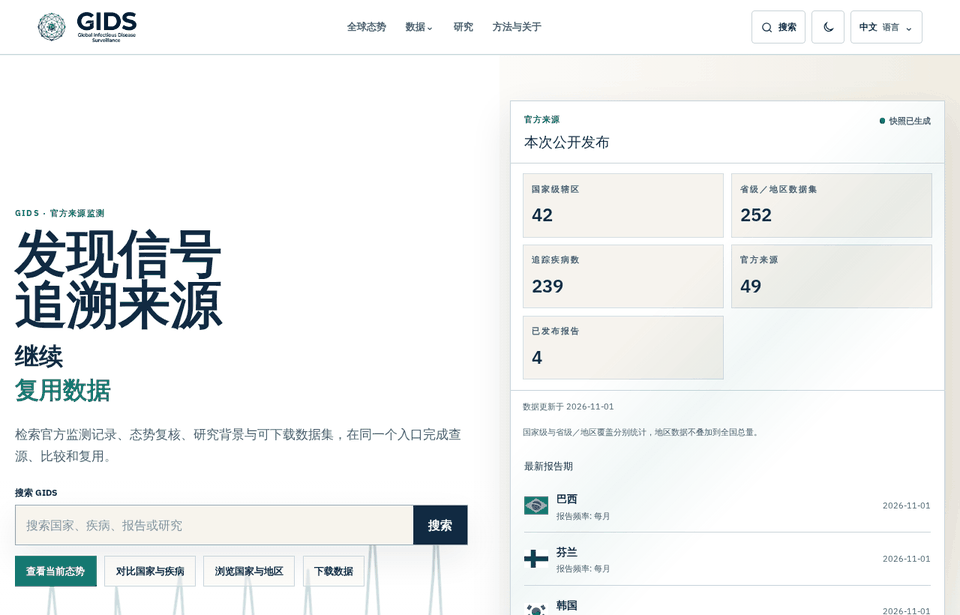
一项传染病研究，通常是从几个具体问题开始的
某种疾病这几年是升是降？不同地区的变化是不是同步？看到一个新出现的疫情信号，背后有哪些官方通报和研究可以查？回答这些问题，就得把散在各国的监测资料串起来。
GIDS 想做的，就是把这条路径缩短一些：从一个问题出发，查到数据、看清来源、做出比较，再顺着线索找到相关研究。
|
4,457,224
条公开监测记录
|
49
个官方来源
|
|
239
个疾病目录条目
|
42 / 252
国家级 / 省州级数据集
|
|
1924年
部分历史资料最早可追溯年份
|
6,669
篇公开研究文献
|
GIDS 持续收录各地官方卫生机构公开发布的监测资料，整理成地区—疾病时间序列。你可以按国家地区找，也可以按疾病找，登革热、百日咳、霍乱、麻疹、疟疾、肺结核等都能查到长期趋势；在有分地区数据的国家，还能进一步看到省、州一级。
比如关注百日咳或登革热，可以先看一个地区的历史曲线，再叠加其他国家同屏对照，比较它们起伏的时间、持续多久、有没有季节性。对比工具支持同时放最多 4 个国家或地区、2 种疾病，图上的数值可以悬停读取，时间范围可以缩放，当前配置能分享也能下载图表。
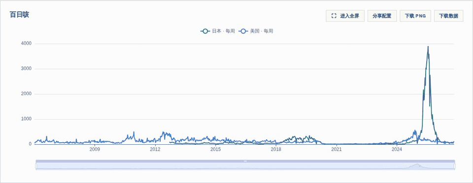
全球监测数据每天都在变化：不同国家和地区的卫生机构按照各自的节奏发布新报告、修订历史数字。GIDS 持续追踪这些公开来源，通过自动化采集和整理，将新发布的资料纳入数据库，让研究者不必反复逐个网站查找。
以北京时间 2026 年 11 月 8 日 03:50—09:50 为例，系统完成了 726 次监测数据采集任务，平均每小时约 121 次，涉及 63 个国家或省州等地区代码。这些任务并行运行，持续追踪各地监测资料。
从追踪来源、检查报告到整理入库，这些持续运行的任务让长期监测序列不断接上新的公开资料。各来源的报告时间与出处均可在数据页面查看。
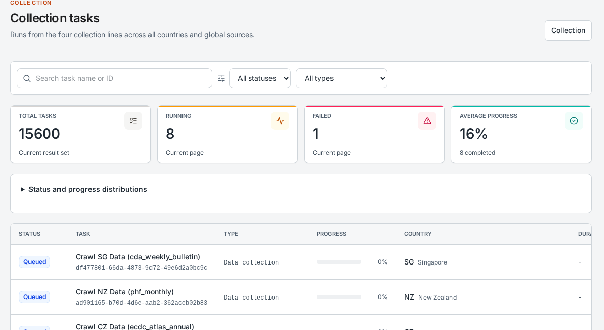
控制面板采集任务快照，展示任务状态和地区。
想了解某种疾病最近的动态，可以打开全球态势——它把各方的疫情通报收拢到同一张地图上。信息来源包括 WHO、欧洲疾控中心（ECDC）、非洲疾控中心（Africa CDC）、泛美卫生组织（PAHO）等，条目展示可获得的疾病、地点、报告日期和出处。
你可以按疾病、国家、来源、时间筛选，点地图上的标记或地点列表里的事件，就能看到通报详情；如果这件事还有关联数据，也能顺带查该地区的监测背景、疾病页面和相关研究，或直接打开官方原文。
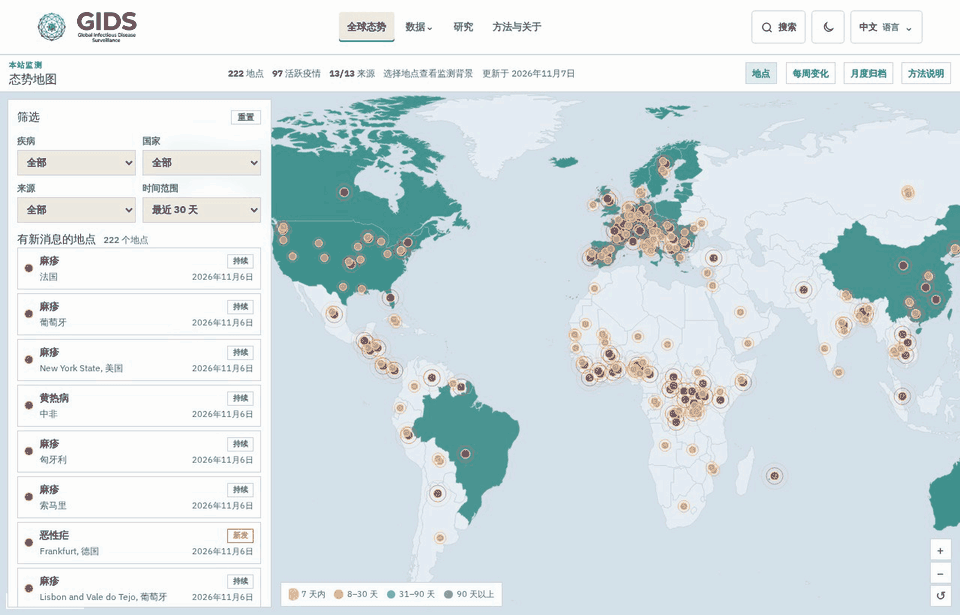
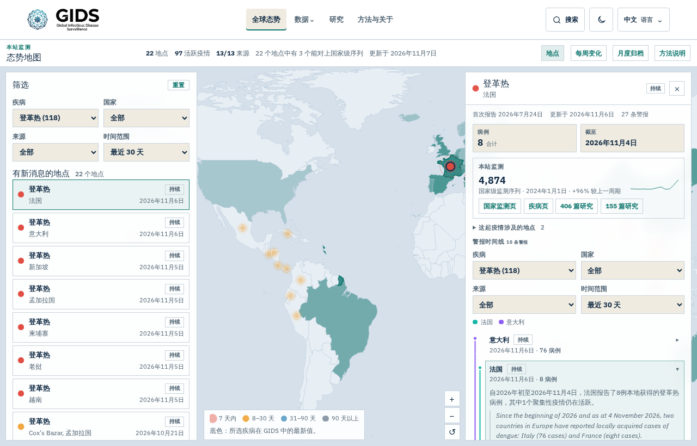
光知道官方报了什么还不够，一个传染病问题往往还要查研究。研究雷达把公开文献按疾病、国家地区、公共卫生主题和研究类型整理好，截至 2026 年 11 月 7 日公开目录收录 6,669 条文献记录；部分文献提供中英文结构化摘要，读者还可以查看期刊和发表信息，通过 DOI 或原文链接进一步查阅。
比如关注登革热，可以从疾病入口找到疫苗、传播、防控方向的研究，再用每周简报、RSS 订阅和证据图谱持续跟进。有些研究已经和监测背景做了关联，方便你按疾病和地区往下翻。
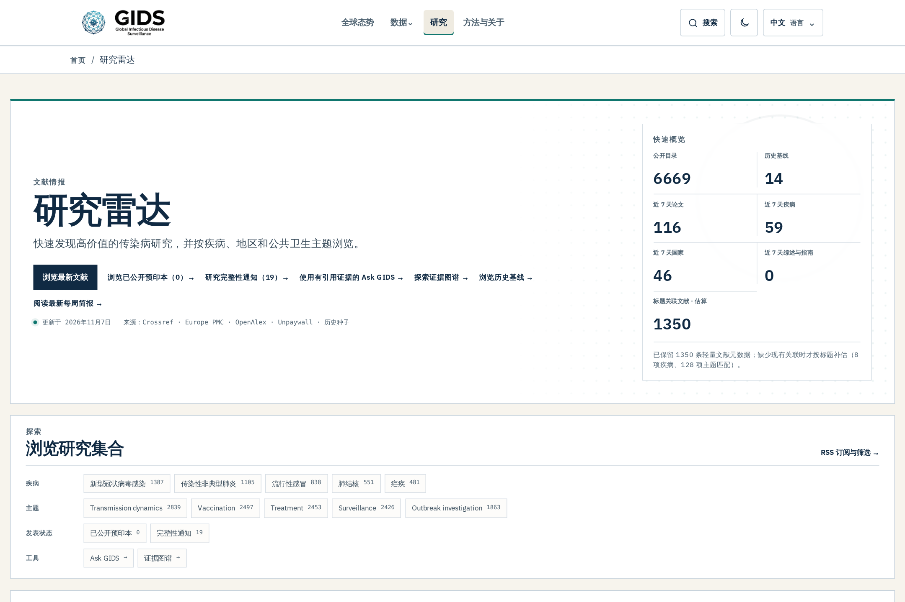
面对不断增长的监测资料和研究文献，GIDS 把 AI 融入内容处理流程：辅助梳理文献要点、生成结构化证据摘要，整理疾病知识资料，并参与报告内容生成和质量审核。研究雷达中的部分中英文摘要，就是为了帮助读者更快判断一项研究与自己关注的问题是否相关。
这背后有持续运行的模型任务。控制面板截图显示，截至 2026 年 11 月 8 日约 09:51（北京时间），调用日志累计记录 379,700 次模型调用尝试；其中同日 03:50—09:50 记录 1,989 次，包括 1,986 次成功和 3 次失败。
AI 让文献梳理、内容生成和质量检查更高效，也让读者更容易沿着摘要找到原始研究。
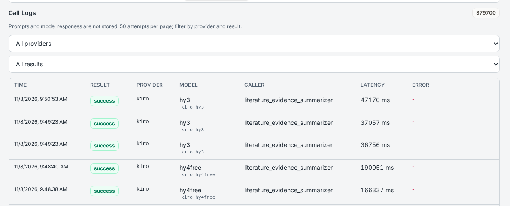
模型调用日志截图：右上角为截图时的累计调用尝试数，包含成功和失败记录。
看到合用的数据，GIDS 支持按CSV、JSON 和 XLSX（Excel）导出，可按国家或疾病查找；详情页会标注历史时间范围和来源，省州级资料从所属国家页面进入。下载后可以直接带进 R、Python 里做趋势整理、问题探索、教学案例或建模。
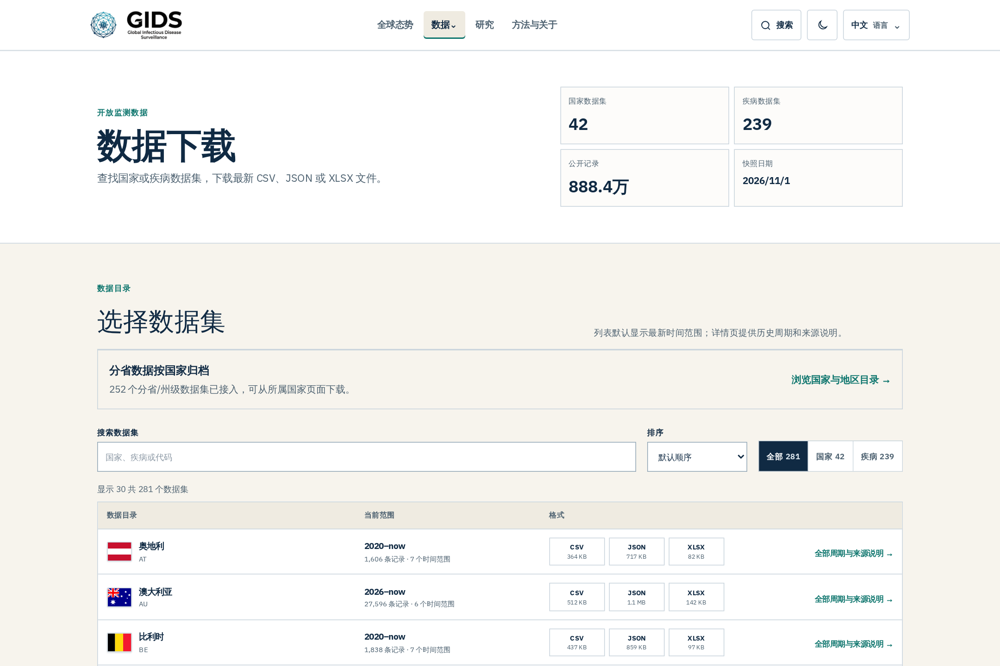
进入数据下载：https://globalinfectiousdisease.com/zh/downloads/
这些长期积累的数据已经走进实际研究。项目早期整理的中国监测数据，直接支撑了李康国等人与合作者关于中国 24 种法定报告传染病在新冠疫情不同阶段变化的研究，成果于 2024 年发表在 Nature Communications。
从收资料、对口径，到最后能支撑一篇正式研究，这条路 GIDS 自己走过一遍，也正是它继续做下去的理由：让每一次整理都查得到、用得上下一次。
订阅功能目前正在测试，预计 2026 年底正式开通。订阅中心已提供表单，可填写邮箱并选择关注的国家地区、疾病、主题和研究类型。计划提供的邮件内容包括报告更新、每周摘要、研究雷达摘要和重点提醒。
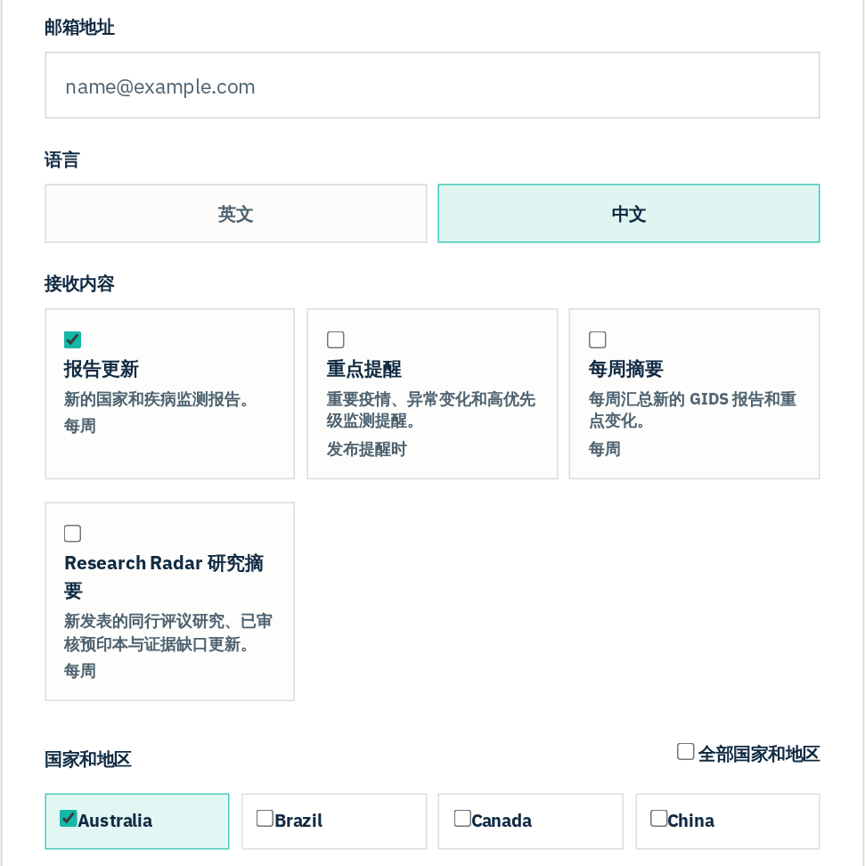
订阅支持中英文，并提供管理和退订方式。研究雷达另外提供 RSS，想持续跟进文献也可以使用。
GIDS 提供中文、英文和法文三种界面，用网页右上角的语言菜单即可切换，在自己熟悉的语言里查监测数据、全球态势和研究资料。下面两张依次是英文和法文首页。
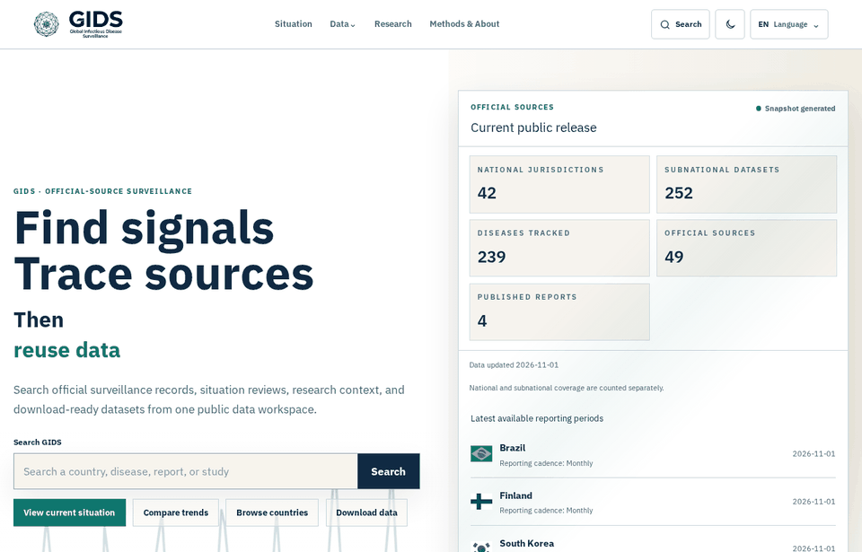
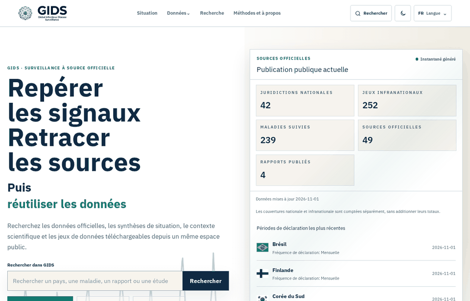
2026 年 10 月 9 日至 11 月 8 日的 30 天统计窗口内，平台 HTTP 请求的来源覆盖 166 个国家和地区，页面浏览量（Pageviews）约 454,040 次，访问次数（Visits）约 408,670 次，HTTP 请求总量约 1,230,550 次。这些数字为抽样估算。
|
166 个
请求来源国家/地区
|
45.4 万
页面浏览(PV)
|
40.9 万
访问次数（Visits）
|
123.1 万
HTTP 请求总量
|
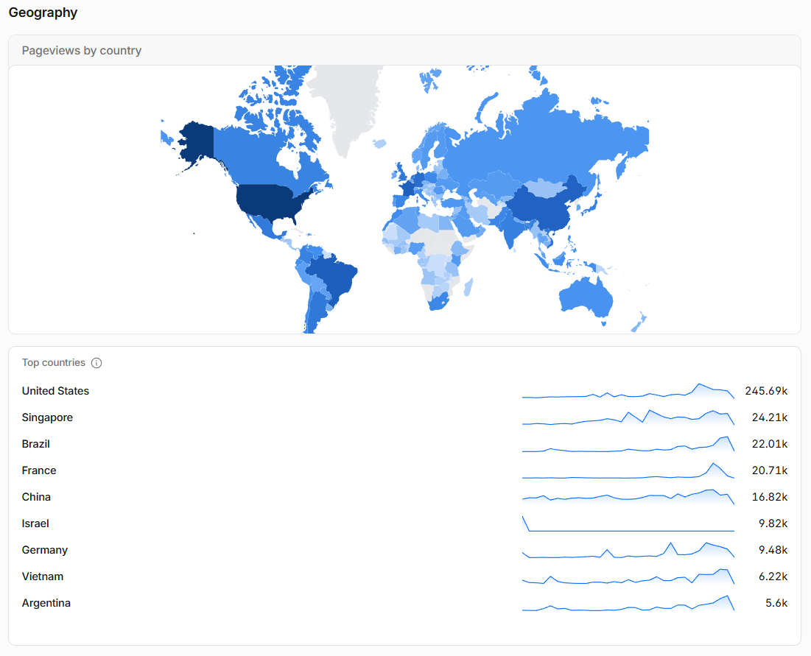
下图展示访问来源的地理分布。
以下从三个角度列出部分页面浏览来源，各组可能重叠：
欧美与亚太：美国约 245,710 次，新加坡 24,220 次，法国 20,710 次，中国大陆 16,820 次。
全球南方：巴西约 22,060 次，越南 6,220 次，阿根廷 5,620 次，印度 3,730 次，南非 2,550 次。
丝绸之路沿线部分地区：新加坡约 24,220 次，越南 6,220 次，孟加拉国 4,330 次，肯尼亚 1,030 次。
在这一统计窗口内，美国约占总页面浏览量的 54%，是最大的页面浏览来源；中国大陆也位居前列。
特别感谢 Cloudflare 提供强大的免费服务，为 GIDS 带来全球内容分发、缓存加速和安全防护，让世界各地的研究者更方便地访问传染病数据。在 2026 年 10 月 9 日至 11 月 7 日的 30 个 UTC 自然日里，Cloudflare 记录了约 123 万次 HTTP 请求，其中约 12.96 万次由缓存响应，并对 24,601 次威胁请求采取拦截或验证措施。对一个长期维护的公共科研项目来说，这份支持让全球共享成为可能。
GIDS 是一个免费开放的公共科研项目，希望让更多研究者、公共卫生工作者和关注传染病的人，方便地获取和使用全球监测资料。特别感谢博士生导师陈田木在项目发展过程中给予的支持与指导，也感谢所有关心、使用和帮助完善 GIDS 的同行与朋友。
不妨就从你正关注的一种疾病、一个地区开始试试 GIDS。也欢迎海内外同行来交流数据需求、推荐可靠来源、指出错漏，或者聊聊学术与研究合作。